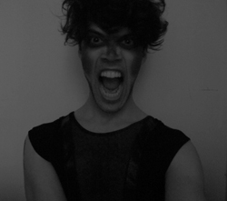

past performance | |
| 
Out Come the Beast! | |
synopsis:Nicholas Gorham and violinist Kyle Kupres further the landscape with a night of original music, dramatic poetry and old favorites. In this exploration of the animal inside us all as it relates to emotional repression, Nicholas and Kyle strip away barriers in a representation of creative and personal transformation. In addition to some reinterpretations, the artists will be premiering new music and spoken word as they summon The Beast and invite it to course through our veins forever. Nicholas Gorham is a graduate of The American Academy of Dramatic Arts and has been performing in New York since the early part of the Century. After crossing the Canadian border, Nicholas had an awakening that theatre could exist without limitations. Nicholas is currently appearing in Linda Simpson's new play "The Emperor's New Codpiece" at The Laurie Beechman Theatre and is workshopping Wu Tsang's "Full Body Quotation" at The New Museum. Kyle Kupres has been studying violin since he was 7 years old. Some of his teachers included Joanne Swenson-Edridge, Oleg Proskurnya and Dimitri Levine of the Philadelphia Orchestra. He has performed at various venues in NYC including La Mama ETC, Delancey Lounge, Roseland Ballroom, Parkside Lounge, The Trocadero Theater in Philadelphia, dancing for Joey Arias's show at Town Hall, among others. | |
upcoming performances |
|||
 |
|||
| EVQ Film Festival 2018 August 20-25 |
|||
performance archives |
|||
| 2018 | 2017 | 2016 | 2015 |
| 2014 | 2013 | 2012 | 2011 |
| 2010 | 2009 | 2008 | 2007 |